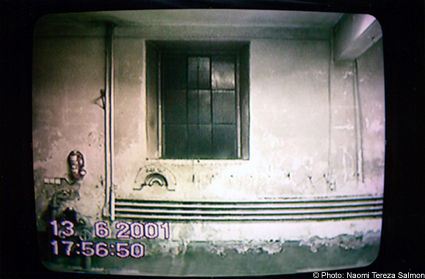

|

"Feuerwehr Hohenems", 2001. The Videoinstallation Firehouse Hohenems refers to the current sitate of the interiors, in which nothing reminds of the original utilization of the Building as a former Synagoge. The surface of the interiors is thrown back upon. This visual doubling make the walls become alive. They seem to become transparent for a glance on the comitted destruction, at the same time refusing new images and answers. With her work, the artist tries to transform the emptiness, that which is missig and cannot be reconstructed into an image of ist own, to offer a reflection surface to the viewer. 4 Videobeamer: Projection of wall parts on wall parts with Original sound. 1 Monitor mit Videosequence: Image: You are looking at a Reproduction of a Reproduction (detail from paul Klee, Angelus Novus) Sound: ‚The End’ by Art.Indust. Art-Indust - "The End" Audio Sequence, .mp3 format Close Window All content copyright 2006 Naomi Tereza Salmon - all rights reserved |